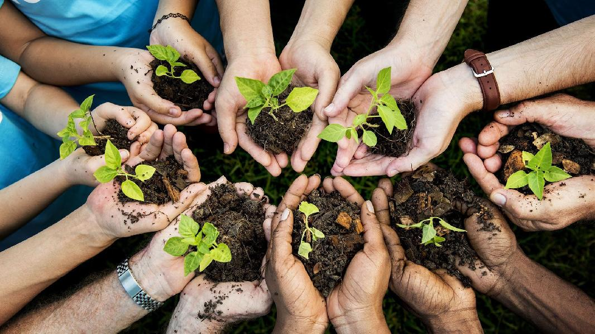

Footprint
Природа. Или наш след в мире.
В последние годы многими были услышаны призывы экологов и сторонников защиты природы. И граждане разных государств прислушались к предупреждениям «зеленых».

Существуют раздельные контейнеры для сбора мусора и отходов. Люди сортируют и отдельно складывают пластиковые упаковки, бутылки и продуктовые подложки. Ведь на них стоят пояснительные значки: подлежит или не подлежит переработке. Благодаря этому специальные предприятия не только утилизируют мусор, но и производят изделия. Помните – пластмасса не разлагается в природе!
Макулатура, которую советские пионеры 70х годов собирали и сдавали для получения различных вознаграждений. Сейчас их движение продолжают различных социальных групп. И из переработанной бумаги производятся необходимые вспомогательные изделия: картон, туалетная бумага, яичные упаковки и многое другое.
Необходимо еще раз упомянуть о культуре в общественных местах: окурки, целлофан, оберточную бумагу донесите до мусорной урны. Например, фильтры сигарет, стаканчик из-под мороженного, как и пластик не разлагаются.
А теперь радостная новость! Сумки: тканные, вязанные, плетенные корзинки, которые берут из дома дамы зарубежных стран для похода в магазин. И мастерицы предлагают приобрести уникальные и очень красивые изделия – на замену пластиковому пакету.
Безусловно, государственные и частные промышленные предприятия обязаны – по закону и совести – производить очистку отходов или использовать их для общества и природы.
Помните, что мы должны оставить чистую планету!
На главную